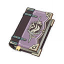
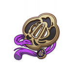
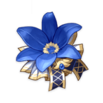

Мона

С помощью своего навыка Мона показывает радиус атаки и наносит гидро-удар (водяной) в течение всего времени действия, после чего провоцирует взрыв.
Билд "Поддержка Гидро"
Оружие
Песнь странника

Когда персонаж выходит на поле боя, в течение 10 секунд играет случайная музыкальная тема. Срабатывает только 1 раз в 30 секунд.
Речитатив: увеличивает базовую атаку на 60/75/90/105/120%.
Ария: увеличивает весь урон стихий на 48/60/72/84/96%.
Интерлюдия: увеличивает мастерство стихий на 240/300/360/420/480.
или
Эпос о драконоборцах
УПри смене персонажа атака увеличивается на 24/30/36/42/48% на 10 секунд. Этот эффект может срабатывать 1 раз в 20 секунд.
Артефакты
Эмблема рассечённой судьбы
(2) +20% к перезарядке энергии
(4) Увеличивает урон взрыва стихий на 25% от перезарядки энергии. Таким образом можно получить максимум 75% дополнительного урона.
или
Церемония древней знати
(2) +20% к здоровью
(4) Использование взрыва стихии увеличивает атаку всех членов группы на 20% на 12 секунд. Этот эффект не суммируется.
Рекомендуемые характеристики артефактов
Основные

Восстановление энергии

Урон Гидро / Атака%

Шанс критического попадания
Второстепенные
- 1.Шанс критического попадания / Урон
- 2.Здоровье%
- 3.Атака%